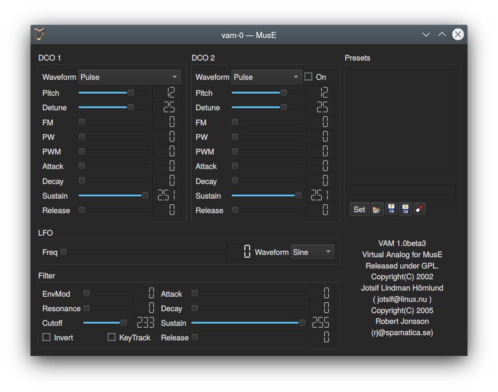
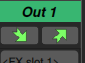
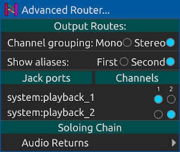
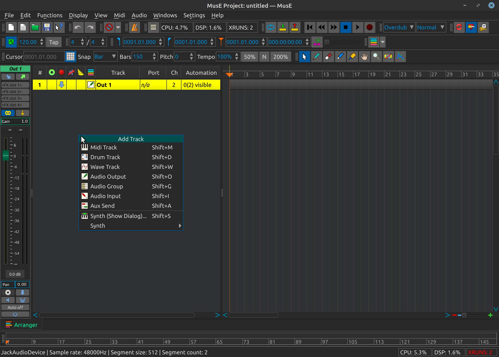
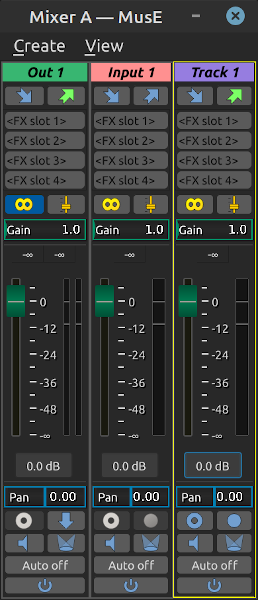
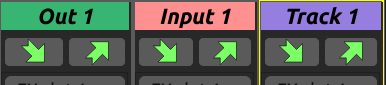
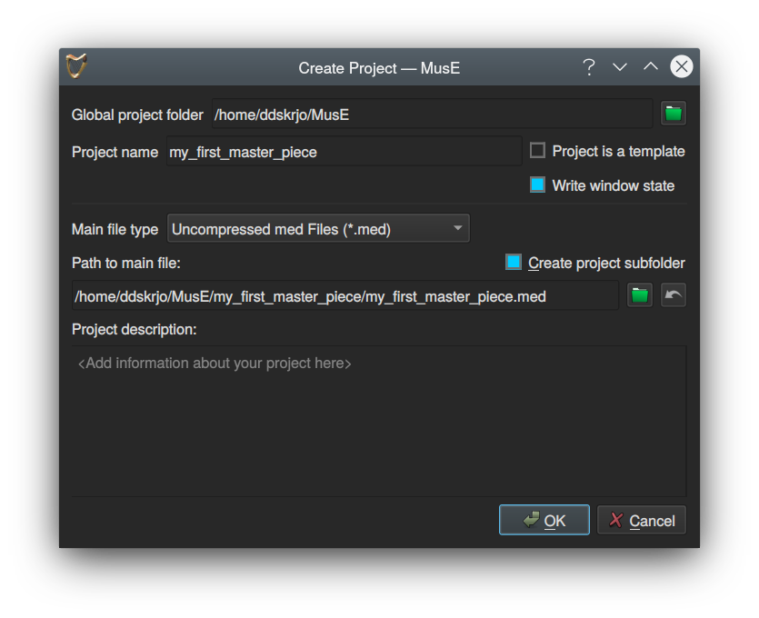
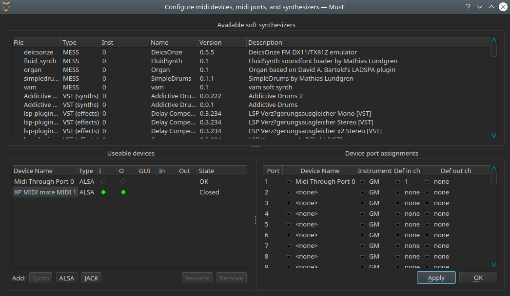

Beginners tutorial
To get a quick grip of what MusE can achieve please follow this beginners tutorial.
There are also several videos on this subject here: Tutorials
Soft synth test
Fire up MusE as was described in the previous chapter, try to make sure that the jack audio server is started with sufficient configuration to allow for audio output without breakup.
As an alternative you can opt for starting MusE with the Pulse Audio backend (see above).
Also, please make sure your system can actually make sound, for instance that you haven’t left the volume at zero. Not that that has ever happened to anyone :).
With MusE up and running, right click in the track pane (see Arranger) and select Synth > MESS > vam soft synth. A Soft Synth track called vam-0 should appear.
Now right click once more in the track pane and select Midi Track. Another track appears called Track 1, and its track list Port column should show it is bound to the synth that was just created vam-0. If it for some reason is not, right-click on the Track 1 Port column to open a drop-down list of available devices and choose vam-0.
Now select the Pencil tool icon from the toolbar, alternatively press the shortcut key D. Move the mouse over to the arranger canvas as referenced in Arranger and point at the midi track, the mouse should have changed to a small pencil. Draw a part along the midi track using the mouse. For this exercise it is not important where or how large the drawn part is. When you are done double click on the drawn part. This will open up the Piano Roll editor. To the left of the Piano Roll there are piano keys in a vertical line, try clicking on the keys in this virtual keyboard - each click should be rewarded with a synth sound (maybe of questionable quality, a sound nevertheless).
If this produces sound you have successfully completed this test. Clicking ESC will close the midi editor and return you to the Arranger window.
As a last thing, locate the colum Port in the tracklist and find the entry for the vam synth, it should read as a number and the word vam-0, double clicking on the port should reward you with popping up the GUI for the Vam synthesizer, as shown in the screenshot below.

Missing sound
If you got sound from the previous exercise you can carry on to the next chapter, or keep reading for further enlightenment in case you come upon trouble later on.
If there is no sound we need to do some fault hunting. First off, open the Mixer window (F10) and look for the the vam-0 track there.
Now bring back Piano Roll window and align the windows so you can see the piano keys as well as the Mixer (see the 5 Function by function chapters for more information on these windows).
When pressing one of the keys on virtual Keyboard the Meter on the Mixer Strip should light up in green to visualize that the Synth is making sound, if it is not, try to back trace your steps and see if you did anything differently than described. Now, if the Meter lights up but there is still no sound we need to check the routing between the tracks.
To check the output routing, click on the Arranger window again and select the Out 1 track, this is the predefined output which MusE by default loads at startup. At the top of Mixer Strip there are two buttons looking like arrows, these bring up the inputs and outputs of the track.

Click on the right one, the output arrow, and make sure that it is connected to some valid outputs on your system.

Click on the outputs to select them, if you did changes here go back and try clicking on the Piano Roll keyboard again, hopefully it helped. If there still are problems make sure your system actually can make sound through Jack, this is however getting outside the scope of this manual. On tip however is to try the jack_simple_client application which is usually bundled with jack. This is a command line tool that when executed should output a tone on jacks output device.
$> jack_simple_client
This might be the time to bring up the concept of community support. Open source software could never be what it is without the support given by individuals on forums and mailinglists, if the information given in this document is not enough, try googling your problem and/or get in touch with one of the online forums for MusE or Linux audio in general. See some pointers in the Support section.
Introduction to recording Audio
At this point we’ll make a slight detour into full on audio recording. Getting audio out of MusE has already been covered in the previous chapters so we will concentrate on the additional steps needed to record sound onto an audio track.
When MusE is first fired up, the output track has already been created (more about this in the templates chapter), to proceed with audio recording we need to add two additional tracks, a wave track and an input track. When MusE is first started, right click in an empty space on the track view.

and select Audio Input. Right click again and also select Wave Track. Two additional tracks are now visible in the Arranger, “Input 1” and “Track 1”. Bringing up the mixer with F10 should show the following configuration.

Do note all the buttons on each mixer strip. Hover over them to see their respective functionality. For more information on all the buttons see the chapter about the mixer.
For now lets just do what we must. Note that the first three steps are likely not needed as this should already be their default setting but are listed to highlight their functionality as they are common errors 1. Click on the stereo symbol over the slider to change the input to a mono track (optional step).
2. Do the same for the wave track (optional step) . 3. Click on the Mute icon on the input track to unmute it (optional step).
4. Click on the input routing button on the input track and select an appropriate connection from your system, where you hopefully have an audio source connected.
5. Click on the output routing button on the input track and select Track 1
Already after step 4, the meter on the input track should come alive if there is incoming sound from your sound source.
We are now nearly ready to start recording. First we need to select a location to store the files as MusE does not use a centralized storage of soundfiles. MusE instead uses the path of the song-file (extension .med) as guidance as to where the audio files will be placed.
As it happens MusE will prohibit us from starting a recording until the songfile has been stored. So lets take advantage of this behaviour and just go ahead and try to record.
In the mixer click on the red record dot on the Audio Track to ARM it for recording (or enable if you prefer). Now when there is audio coming into the input it will also show up on the Audio Track. Also note that all the input and output routing buttons on the tracks now have the same active color, this means that all of the tracks have a proper connection.

All fine and dandy. Now bring up the arranger window and find the round, red on white record button and click on it. This is your command to MusE to prepare for recording. However since we have (deliberately) not saved our song, we are presented with a dialog to do just that.

Note the check box for Create project subfolder, when working with audio this is very much recommended or you may soon loose track of what audio files belong to which song.
Finally we are ready to start recording! The process is completed by clicking on the Play button in the Arranger.
If all went well, MusE then starts to record a wave file from the Input Track placed in your song directory. At this point, do try to make some noise so something is indeed recorded.
When you wish to stop recording press the Stop button. Now the resulting waveform should be visible on the created part in the Arranger. After rewinding the Play position and pressing Play again the resulting sound should be played through the connected output.
A quick note about rewinding: This may not be necessary as there is a setting for doing automatic Rewind on Stop on the Settings menu, if this was checked it will already have returned to the starting point upon pressing stop!
Recording MIDI with external Keyboard
Let us briefly complete this beginners tutorial by going over how to record MIDI into MusE from an external keyboard.
First complete the steps in the first tutorial, Soft synth test. This will ensure that we have a synthesizer connected that can play back the recorded MIDI.
If you want to use some other synth from the Soft synth list, or for that matter an hardware synth that is fine too. If clicking on the piano in the Piano Roll produces sound you are good to go.
Connect external MIDI device
Nowadays most external MIDI devices have a USB connector, connecting this to your computer should yield a USB-MIDI device. If your device is more old-style (some would say better) it has a traditional MIDI connector, to connect this to your computer you need to have a MIDI port on your computer. Many more advanced soundcards have MIDI connectors builtin but there are also stand alone USB-MIDI converters for this purpose.
For the purpose of this guide, let’s assume you have a means to connect your external MIDI keyboard to your computer.
Here is an example configuration:

The XP MIDI mate MIDI 1 listed in the Useable devices is a USB-MIDI adapter through which I have my external MIDI keyboard connected.
Note that the device State says Closed. This signals that this device has not been assigned to a Port. It can quickly be remedied by clicking on the first non configured Device Name in the Device port assignments dialog and select the XP MIDI mate MIDI 1 device. More about this in the midi ports chapter.
After doing this, the State of the device will change to OK. Also note the green diamonds in the I and O columns, which signifies that the device is capable of both receiving and sending MIDI information. These should already be set to the right state but if they for some reason do not, enable them and click Apply and/or OK.
Checking connectivity
With the external MIDI device configured in MusE go back to the arranger. Set up a software synth as in chapter Soft Synth Test and add a MIDI track connected to this track.
Now click on the input monitor button, green circle, for the midi track in the track list. If everything was configured OK you should now be able to play on the keyboard and hear the sound from the software synth!
Enable Metronome
Now let us quickly enable the metronome so we have a beat to play to. Among the toolbars there are two toolbars, Metronome and Tempo. Make sure the Metronome button is checked, more reading about the metronome here The tempo is not necessary to change for this test but for future reference this is where the tempo is changed. By default the tempo-map is enabled which can complicate things but more on that later on.